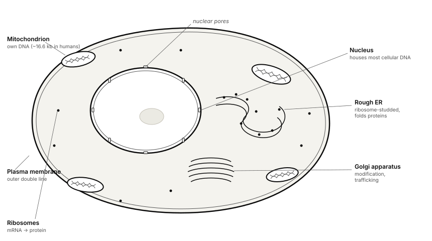
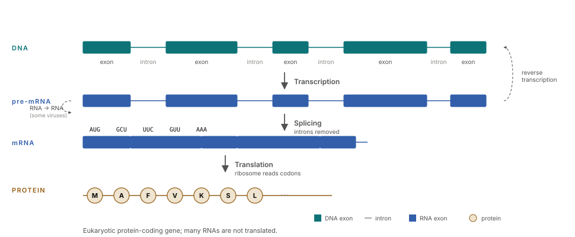
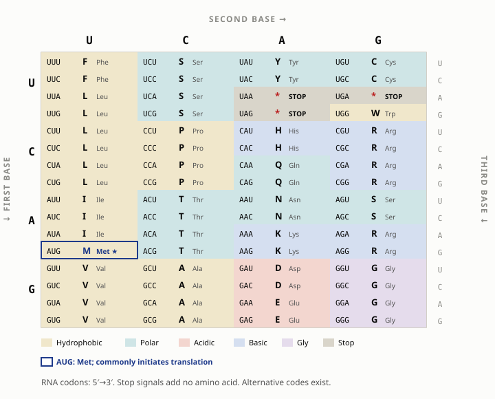
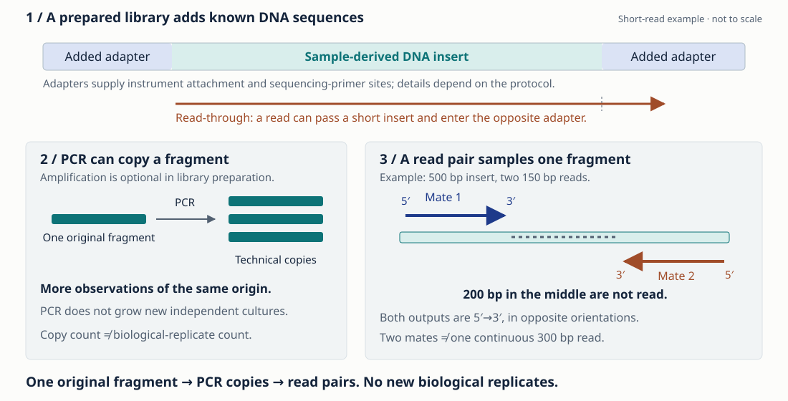
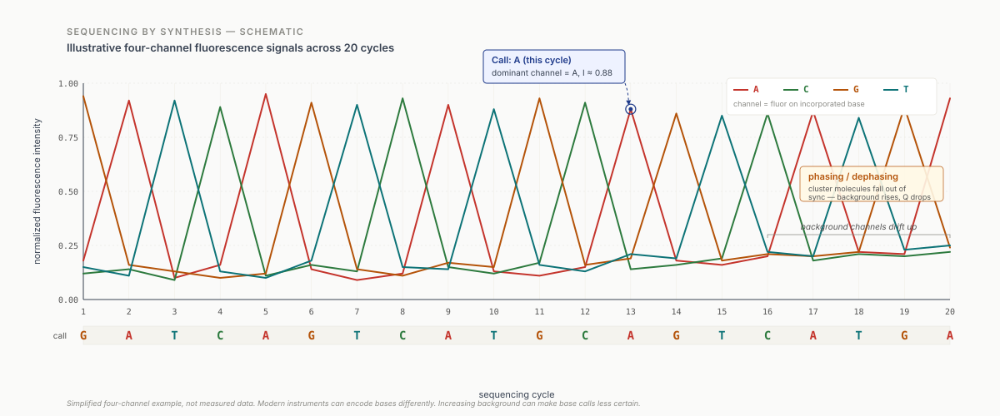
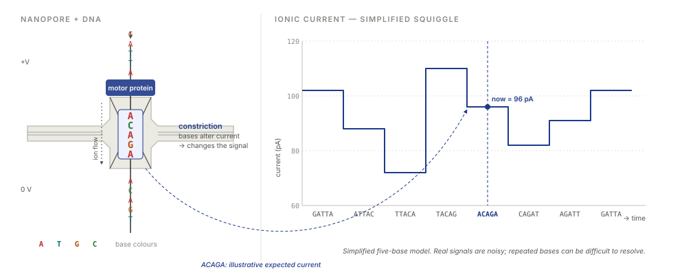
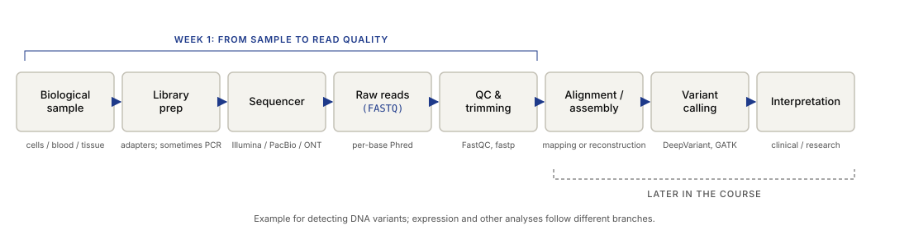
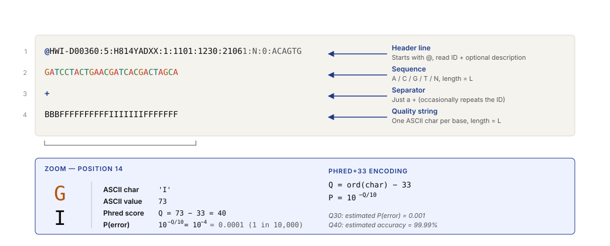
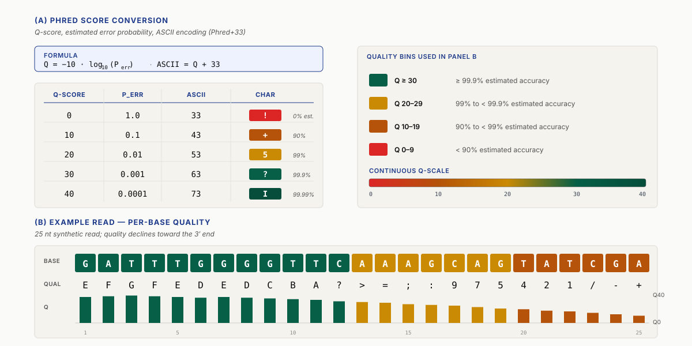

The sample and the questionTwo tubes. A difference to explain.
What would you measure to investigate slower cell growth?
Imagine a laboratory growing the same type of eukaryotic cells—cells with a nucleus—in two conditions. One culture grows more slowly. The team asks you to help investigate what changed. This is a fictional teaching case; we will use it to decide what to measure before choosing an algorithm.
Usual growth conditions
The reference condition for the comparison.
Slower growth observed
The difference we want to investigate.
What might be different inside these cells? Suggest one thing you could measure. What else would you need to know before saying the changed condition caused slower growth? Everyday language is enough.
Bioinformatics uses computation and statistics to investigate biological data. In this case, it could help compare DNA sequences, measure RNA abundance, or investigate a protein. Choosing among those analyses starts with understanding the molecules and the question. EMBL-EBI: what is bioinformatics?
By the end of class, you should be able to follow this journey, distinguish DNA, RNA, and proteins, and explain why a reported sequence needs a confidence estimate. We will first follow a DNA measurement, then return to whether DNA is the right measurement for our question.
Try the activities: cell response · library and read pairs · signal experiment · measurement chooser · read-retention decision · translator · nanopore simulation.
Sample → moleculesWhat is inside our tubes?
Each tube contains many cells. A cell is a living physical system: it takes in materials, carries out chemical reactions, and regulates its activity. Even cells of the same type can differ in their current state. A measurement of an entire tube can therefore combine signals from many cells.

DNA, RNA, and proteins
- DNA · stored sequence
DNA carries genetic information. We write its bases as A, C, G, and T. A genome is an organism’s genetic material; a gene is a region whose expression produces a functional RNA or contributes to producing a protein.
- RNA · expression of that information
During transcription, a cell makes RNA using DNA as a template. Some RNA functions directly. Messenger RNA (mRNA) carries information used to make proteins. RNA uses U where DNA uses T.
- Proteins · molecules doing cellular work
During translation, a ribosome reads mRNA and assembles a chain of amino acids, the molecular building blocks of proteins. Proteins can catalyse reactions, transport molecules, or receive signals. Their structure matters to what they do.
DNA sequencing can test for sequence differences. RNA measurements tell us which RNAs accumulate, while protein assays can measure amounts or activity. RNA and protein abundance can differ because cells also regulate translation and protein breakdown.
Trace transcription and translation in the diagram

Follow the molecule
What changes when one DNA letter changes?
Use the translator to follow a short coding DNA strand through RNA codons to amino acids. A codon is a group of three RNA bases. We provide the frame; finding a real gene’s start requires additional biological context.
- Predict the RNA letters for
ATGGCTTTCTAA, then step through one codon at a time in frame +1. - Compare
ATGGCCTTCTAA. One letter changes: must the amino-acid sequence change? - Try
ATGTAAGCTTTC. Predict what happens after the second codon.
Open the DNA → RNA → protein translator
Open translator in a full tab ↗
Compare your predictions
The first coding strand gives RNA AUG GCU UUC UAA: methionine–alanine–phenylalanine, followed by STOP. The second gives AUG GCC UUC UAA and the same amino-acid sequence. The third reaches a stop at codon 2, after methionine; later codons are not translated in this run. STOP is a signal, not an amino acid. The examples use the standard genetic code and the specified reading frame.
Look up the codons in the genetic-code table

Make a prediction
Could the DNA stay the same?
Tube B grows more slowly. Could its cells have essentially the same DNA sequence as Tube A but different RNA abundance?
Choose an explanation to explore its implications.
Explanation for reading or discussion
Yes. Regulation can change RNA abundance while DNA sequence stays essentially the same. RNA abundance alone does not determine protein activity. Comparing conditions also requires biological replicates—independently grown cultures in each condition—and suitable controls.
DNA is a molecule before it is a string
DNA’s two strands usually pair by complementarity: A with T, and C with G. They run in opposite directions, labelled 5′ and 3′. Sequence files conventionally write a strand from 5′ to 3′. The genome also contains regulatory regions and repeats; it is more than a list of protein-coding genes.
A sequence file records base order. It does not record how much RNA the cell produces from that DNA or the conditions in which the cell grows.
Optional exploration: the other DNA strand
Try ATGGCTTAA. Complement the letters, then reverse their order to write the other strand in the standard direction. The reverse complement is TTAAGCCAT. Direction will matter when we compare sequences next week.
Vocabulary references: NHGRI on genes, transcription, and translation.
Molecules → measurementHow does a molecule become a file?
DNA sequencing measures the order of bases
Suppose we choose to investigate whether DNA sequences differ between our cultures. DNA sequencing is the laboratory process of determining the order of A, C, G, and T in DNA molecules. We take a sample from each culture and preserve its labels through preparation. NHGRI: DNA sequencing.
The input is physical DNA, usually sampled as fragments. The instrument records a signal, such as light or electrical current. Base calling is the software step that estimates the bases from that signal. Each reported sequence is a read; ACGTACGT is a short illustrative example. A fragment is a molecule, while a read is the sequence reported from its measurement.
A read may cover only part of a genome and may contain errors. Analysis must still determine where reads belong and whether the samples support a sequence difference. Even an established DNA difference would not, by itself, explain slower growth. First follow how DNA is prepared, then compare instruments and test how noise can change a reported read.
Trace the observation’s origin
From one fragment, how many reads?
A sequencing library is a prepared collection of molecules the instrument can read. In this short-read example, known DNA adapters are added around a sample-derived fragment, called the insert. Adapters provide sites for instrument attachment and sequencing primers. If a read extends beyond a short insert, its tail can include the opposite adapter. Those adapter letters were added during preparation; they are not part of the sampled genomic insert. A confident base call can still be an adapter base.

Some preparation workflows use PCR, which makes copies of starting molecules; others omit it. Measuring several copies gives repeated technical observations of the same origin. It does not create independent biological replicates such as separately grown cultures.
In paired-end sequencing, two mates come from opposite ends of the same fragment. They are linked observations, not two biological replicates. Their middle may remain unsequenced: a 500-base insert with two 150-base reads leaves 200 central bases unread. Two read records therefore need not form one continuous 300-base sequence. Shorter inserts can instead give overlapping mates.
One original fragment from one culture produces three PCR copies. Suppose each copy yields one read pair. How many read records result? How many original fragments and independently grown cultures do those copies represent?
Count the units
Three pairs contain six read records, descended from one original fragment in one culture. PCR adds no new independently grown cultures. The two mates in each pair share a fragment, and the three copy-derived pairs share an original molecule. For a comparison of growth conditions, independent cultures provide biological replication; PCR copies and paired mates do not substitute for them.
Background: Illumina on paired ends of one fragment and adapter read-through; EMBL-EBI on technical versus biological replication.
Illumina short reads, Nanopore, and PacBio HiFi
Illumina uses sequencing by synthesis: fluorescent signals report base incorporation across clusters of DNA copies. Conventional short reads cover hundreds of bases. A 2 × 150 bp run gives two 150-base mates from each fragment; the middle can remain unread. Illumina’s measurement principle.
Oxford Nanopore measures changes in electrical current as a strand passes through a pore. Several nearby bases influence the signal, and software estimates the sequence. Reads can extend from thousands to more than 100,000 bases when intact molecules and preparation allow it. Oxford Nanopore’s measurement principle.
PacBio HiFi uses single-molecule real-time (SMRT) sequencing: fluorescent signals report a polymerase adding bases. Multiple passes around a circular template are combined into a consensus for the same insert, often about 15–20 kb long. The consensus reduces errors; the passes are repeated observations of one molecule. PacBio’s HiFi and circular consensus explanation.
Here, 1 kb means 1,000 bases. These lengths illustrate the comparison rather than specifying universal limits. Accuracy depends on chemistry, software, and whether we mean a single pass or a consensus. Long reads can connect a repeat to unique flanking sequence, helping read placement and assembly. NGS is a broad term for next-generation sequencing, not another name for Illumina.
Could a read bridge a 5 kb repeat?
A single 150-base read cannot cover the whole repeat and both flanks. A sufficiently long Nanopore or HiFi read could connect them, if that molecule is sampled and the flanks are distinguishable. Length alone does not establish a correct assembly.
The instrument now measures physical signals from prepared molecules. Base-calling software estimates DNA letters from those signals. Different technologies use different measurement principles; we will compare optical intensity with electrical current.

Try a signal estimate
When does the called letter change?
This invented four-channel example calls whichever channel has the largest intensity. Predict what happens as competing signal increases, then move the control.
Called letter: A. The two largest signals differ by 52.0 arbitrary units.
Reveal the known letter in this simulation
The simulated molecule has A at this position. At control value 60, A and C tie. Above 60, our simple rule calls C incorrectly. Explain how the largest-intensity rule makes the wrong call here.
A deliberately simplified, deterministic model. The control changes channel intensities; it is not a measured noise level. The signal gap is not a calibrated probability or Phred score. Real base callers use richer models, and sequencing technologies differ.
A second measurement principle: electrical current

Compare two measurement principles
Can you read the sequence directly from a current trace?
The nanopore activity lets you change a DNA sequence and the simulated noise. First predict which parts of the trace will become harder to distinguish. Then compare a repeated-base sequence with a varied sequence using the same settings.
Open the nanopore signal simulation
Open nanopore simulation in a full tab ↗
Describe one difference between the optical example and this electrical example. In each example, name what the instrument measures and what the software estimates. Would lowering the simulated noise verify a sample label?
Discussion guide
Current depends on sequence context in the sensing region, rather than one universal current level per DNA letter. Noise can make inferred sequence less certain. The activity uses invented signal levels and simplified timing; it is not an instrument model or a calibrated accuracy estimate. Sample identity must be tracked during collection and preparation, regardless of signal quality.
Base calling estimates a hidden sequence from a noisy signal. The sample label comes from laboratory records; it cannot be recovered from the base caller’s confidence score.
Sequencing produces reads; analysis locates them
A read is a reported sequence from a sequencing measurement. It often covers only part of the genome. Reads can overlap, come from either strand, and contain errors. The file order does not tell you their genomic positions.
Toy sequence ATGCCATGACCT
ATGCCA
CCATGA
TGACCT
We have placed the toy reads to show their overlap. Real analysis must infer their positions or reconstruct a sequence. Alignment compares a read with another sequence or a reference. Assembly reconstructs longer sequences from reads and their relationships. An identical repeat can give several possible placements; an error can disrupt a true match.
If a genome contains the same short sequence in several places, can a read containing only that sequence tell you which copy it came from? What additional information could help?
Record sample labels and growth conditions alongside the reads. Preparation batches can introduce differences between samples, while the reference version and analysis parameters affect the computational result.

Measurement → interpretationThe question determines the analysis
Return to our slower-growing culture. A DNA sequence comparison is one possible investigation. RNA measurements or protein studies address other parts of the question. For each branch, ask what it measures and how that measurement could test your proposed explanation.
Do the cultures differ in DNA sequence?
Illustrative B A C G G T C
Invented sequence illustration, not a result from our tubes.
- Data
- DNA sequencing reads, sample metadata, and a suitable reference.
- Method
- Check read quality, align sequences, and assess evidence for a sequence difference (a variant).
- Result
- A candidate sequence difference supported by reads. Testing its effect on growth is a separate experiment.
- EE connection
- Distinguishing a sequence difference from a measurement error.
Does the changed condition alter RNA abundance?
Imagine a matrix with genes as rows and samples as columns. Entries summarize RNA observations. We compare conditions using biological replicates and account for variability and technical effects.
- Data
- RNA-sequencing counts and an experimental design.
- Method
- Count RNA observations and compare replicated samples, accounting for differences in sampling and biological variability.
- Result
- Evidence for changes in RNA abundance under the measured conditions.
- EE connection
- Signal estimation, count noise, and detecting changes across many channels.
Could a protein help explain the observation?
If earlier evidence points to a protein, its amino-acid sequence can supply an input to structure-prediction methods. The model estimates the protein’s three-dimensional structure and reports confidence in that estimate.
- Data
- An amino-acid sequence and method-dependent supporting information.
- Method
- Structure prediction and evaluation of model confidence.
- Result
- A predicted structure that can suggest experiments. Measure the protein’s activity to test a proposed effect on growth.
- EE connection
- Learned representations, geometric constraints, and model evaluation.
Choose evidence and compare proposals
Which measurement answers your question?
Choose a measurement, then try changing the question.
After exploring, finish: “This could support…” and “To explain the growth difference, we would still need…” Compare two groups’ proposals: what control or repeated measurement would strengthen each one?
Read the measurement guide
DNA sequencing addresses sequence differences. RNA measurements address RNA abundance. A suitable activity assay addresses a protein's activity under the assay conditions. For the chosen measurement, compare independently grown cultures in each condition. Plan how to separate a condition effect from preparation-batch differences.
What bioinformatics work involves
Some projects develop algorithms. Others organize reference databases, build reproducible workflows, assess models, or collaborate with experimental teams to interpret a result. For example, maintaining a reference database includes checking sequence labels and recording version changes so analyses can be repeated. NHGRI: genomic data science.
Our ten-week route
- 01Introduction
- 02Alignment and search
- 03Assembly and graphs
- 04DNA variation
- 05RNA abundance
- 06Expression statistics
- 07Single cells
- 08Genetic association
- 09Proteins and ML
- 10Integrated case
In class we develop the biological question, reason through methods, and use demonstrations. Colab homework gives you time to implement a small part and interpret the result. Each assignment will state its scope and expected effort separately.
Measurement → readsIdentical sequences, different quality scores
Before looking at a file format, compare these two invented reads. They are independent teaching examples, not results from Tube A and Tube B.
Read 1
ACGTACGT
Read 2
ACGTACGT
Would you trust one read more than the other? Decide what information is missing before opening the next step.
Reveal the confidence attached to each base
| Read | Scores in sequence order |
|---|---|
| 1 | 40 40 40 40 40 40 40 40 |
| 2 | 40 40 40 40 20 20 10 10 |
Higher scores mean lower estimated base-call error probability. Revise your prediction. Where would you put the most uncertainty?
Discuss the result
Read 1 has lower estimated error probability at every position where the scores differ. The last two calls in Read 2 have the highest estimated error probability. These scores predict how often calls may be wrong; checking actual errors requires a known sequence.
Confidence has a numerical meaning
A Phred score expresses an estimated base-call error probability. Q20 corresponds to 1%, Q30 to 0.1%, and Q40 to 0.01%. A ten-point increase divides that probability by ten. These estimates need calibration: across many calls, predicted error rates should agree with observed rates. Quality-score reference.
Phred equation: Q = −10 log10(perror), or perror = 10−Q/10. Here perror is the estimated probability of a wrong base call, expressed as a fraction. For Q30, 10−30/10 = 0.001 = 0.1%.
This estimates uncertainty about a call. It is not an observed error count.
Like a decoder, a base caller reports a symbol and a confidence estimate. Here the estimate concerns the called DNA letter.
FASTQ keeps the sequence and its confidence together
FASTQ stores a read identifier, its sequence, a separator, and a quality string. The quality string has one character for every base. FASTA stores sequences with headers but does not include these per-base quality scores. NCBI: file formats.
Open the four-line FASTQ diagram

What does a broken record tell us?
Open the FASTQ inspector. Inspect its eight-base example, then remove one quality character and read the validation feedback. Restore the character. Explain why a structurally valid record can still contain uncertain calls.
Sequence and quality lengths must agree. Passing that structural check does not establish that each base call is correct. The trailing quality characters ++ are valid data on the fourth line.
Compare length and estimated error
Choose how much of Read 2 to keep
Predict a useful cut point. Keep a prefix of ACGTACGT by moving the control. Compare the retained length and estimated uncertainty.
8 of 8 bases retained (100%). Mean estimated error probability per retained base: 2.755%.
Keeping all eight positions preserves the most sequence, including the uncertain tail.
Compare some possible decisions
Keeping 6 bases retains 75% of the sequence, with mean estimated error probability 0.34% per retained base. Keeping 4 retains 50%, with mean estimated error probability 0.01%. Keeping nothing leaves no usable observation. A shorter read can be harder to place uniquely. There is no universally best cut point.
The summary averages base-level error probabilities; it does not convert an average Q score or estimate the probability of any error in the read. Homework implements a specified trimming rule on longer synthetic reads.
Homework turns this prediction into a small investigation with 200 synthetic reads. You will compare confidence and retained sequence before and after trimming. You will report how the trimming rule changes retained length and estimated errors.
Optional reference: encoding, trimming, and the worked example
Our homework uses unwrapped four-line FASTQ with Phred+33: Q = ord(character) − 33, then p = 10 ** (−Q / 10). Read 1 is encoded as IIIIIIII; Read 2 as IIII55++.
Encoding reference for homework

Characters such as @ and + are valid in a quality string. Parse the four-line structure rather than split the entire file whenever @ occurs. Historical variants and wrapped records exist; our teaching parser handles the stated modern subset.
The hand-worked example used in homework
@toy_read_2
ACGTACGT
+
IIII55++The quality scores are Q40×4, Q20×2, and Q10×2. Summing their probabilities gives 0.2204 expected errors. Trimming the trailing Q<20 bases leaves ACGTAC and IIII55, with 0.0204 expected errors. Use minimum length 6 for this eight-base illustration; the actual homework dataset uses minimum length 50.
Expected errors can be fractional and differ from observed mismatches. Their sum does not give the probability of any error in a read. Also, converting an average Q does not give the average probability: Q10 and Q30 average to Q20, but their mean error probability is 5.05%, rather than 1%.
Discussion, recap, and homework handoffWhat can we now explain?
Return to your explanation for Tube B. Name a measurement that could test it and describe the result you would predict. Sketch sample → molecules → measurement → reads → interpretation, then mark where a sample-label error or an uncertain base call could enter.
- How do DNA, RNA, and proteins connect, and why might we measure each?
- What distinguishes a genome from a sequencing read?
- What does Q30 tell us, and what would we still need before claiming a biological difference?
Compare your answers
DNA carries genetic information; transcription produces RNA, and translation uses mRNA to assemble proteins. Different measurements address sequence, activity, and structure. A genome is the organism’s genetic material, while a read is a reported sequence from one measurement. Q30 corresponds to an estimated base-call error probability of 0.001. To compare the cultures, we would also need their sample labels, measurements from independent cultures, and an analysis matched to the proposed explanation.
After class / Homework 01
Which reads would you trust?
Continue our Read 1 / Read 2 prediction after week 1 and before week 2. Scale up to 200 synthetic reads, finish a scaffolded parser, decode quality scores, and compare a simple trimming rule. These are practice data, independent of the fictional cell-culture case.
Keep a small analysis record
Record the inputs and settings so someone else can repeat your calculation. Use these prompts for the interpretation at the end of the notebook.
- Input
- The supplied synthetic reads, generated with seed 2026; they are unrelated to the fictional cultures.
- Settings
- Phred+33; Q20 trailing trimming; minimum retained length 50.
- Result
- Retained reads and bases, expected errors, and the information removed.
- Limit
- The result describes this simulation and trimming rule, not an instrument or treatment effect.
Keep the setup output with your notebook so the Python version is recorded. If you change a parameter, record the new value and rerun the dependent cells.
- Open the week-specific Colab link, save a copy in Drive, and use a Python 3 CPU runtime. Run setup first. If the repository notebook is unavailable, download it and use File → Upload notebook in Colab.
- Run the setup cells and complete the marked tasks in order. The notebook generates its data and includes hints.
- Keep the quality plot or printed positional table and the before/after comparison.
- Submit the completed notebook and three sentences: what changed, what information was lost, and what the result cannot establish.
Reference solutions are collapsed using Colab forms. Try each task first; running a reference cell replaces that function in the current runtime.
Basic Python required. No external dataset or package installation is necessary. Use a prepared local Jupyter environment if preferred. The optional Q10/Q20 comparison is additional exploration.
Next week and further exploration
In week 2: sequence alignment and search, we compare sequences, work through small alignments, and examine how searching a database differs from locating a sequencing read.
- EMBL-EBI: Bioinformatics for the terrified — a gentle orientation to the field.
- NHGRI genetics glossary — a reference for unfamiliar biological terms.
- NCBI sequencing file formats and Phred quality scores — references for the homework.
- Cock et al. (2010). The Sanger FASTQ file format for sequences with quality scores. Nucleic Acids Research 38(6), 1767–1771.